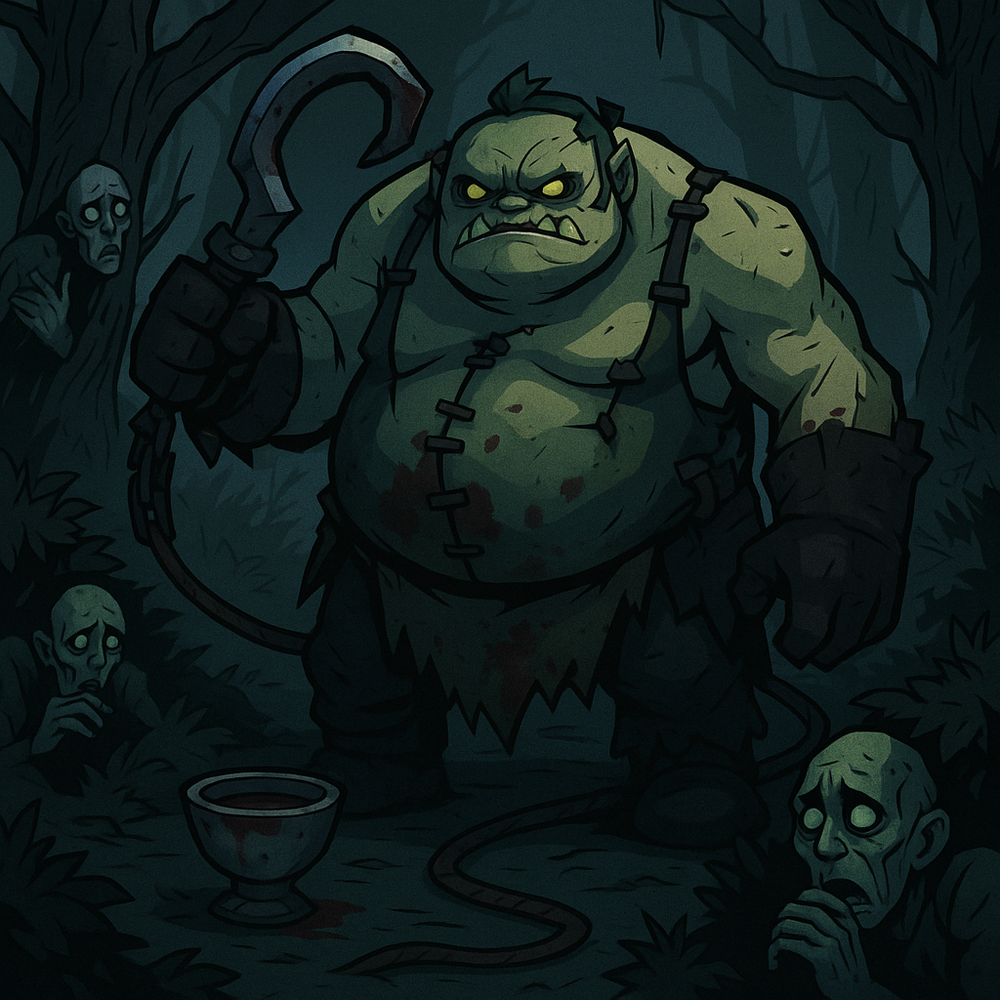

Історія
У темних трясовинах Забутого Некровалю Пудж починав як скромний м’ясник, що чистив поля битв від тіл загиблих. Але з часом його роль переросла в одержимість: він не просто знищував тіла, а насолоджувався процесом. Його гак рвав плоть з майстерністю, яку можна назвати мистецтвом. Його запах смерті і гнилі розходиться по всій долині, і навіть мертві тіла бояться бути знайденими ним. Тепер Пудж — ходячий кошмар, що живе лише для нового шматка м’яса.
Друзі

Drow Ranger

Slark

Lich
Галерея